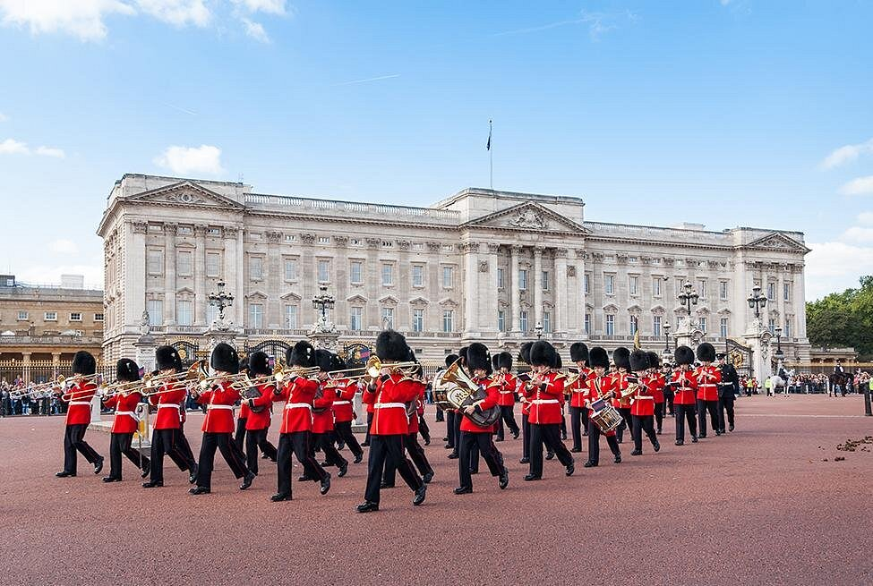

Buckingham Palace

Buckingham Palace & the Changing of the Guard
Watch the Changing of the Guard. It is a ceremony. The Royal Guards play music and march in front of the palace. They wear red uniforms and tall black hats. Come early to get a good place!